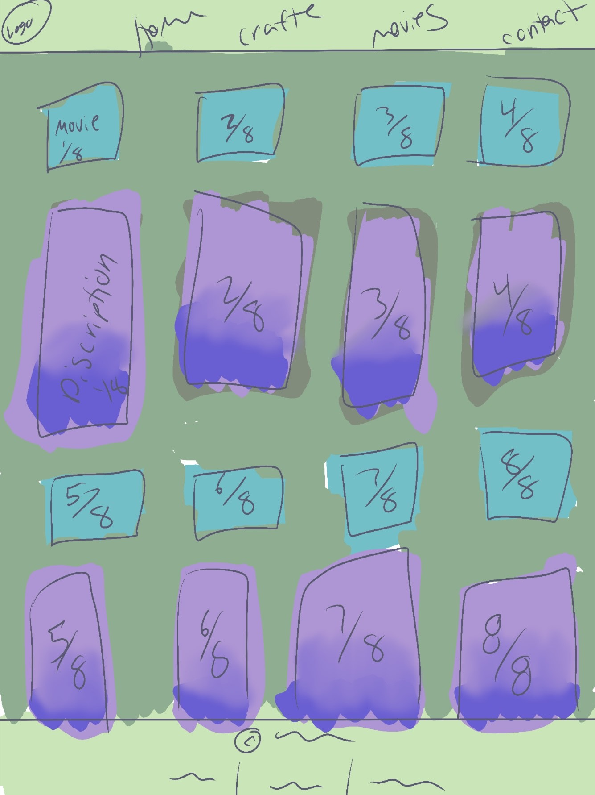
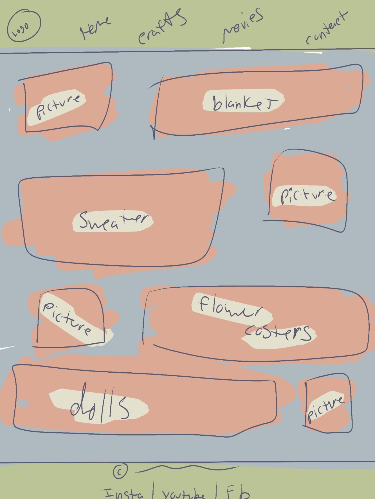

Overview
Purpose
This site celebrates the art of handmade crafts and the magic of movies that spark imagination. You'll find inspiring tutorials, unique project ideas, and curated film recommendations—all designed to blend visual storytelling with hands-on creativity. Whether you're here to craft, watch, or dream, there's something to ignite your passion.
Audience
Made for makers and movie lovers. This site is crafted for creative hobbyists and film enthusiasts—especially young adults and adults who love DIY projects and discovering new cinematic gems. Here, you’ll find inspiration to fuel your next craft, along with handpicked movie recommendations that ignite the imagination and celebrate the art of storytelling.
Branding
Website Logo

Style Guide
Color Palette
Palette URL:
https://coolors.co/396e94-e7c24f-a43312-381d2a-aabd8c| Primary | Secondary | Accent 1 | Accent 2 |
|---|---|---|---|
| [#FEDCD2] | [#DF744A] | [#BFD8D2] | [#3D5A5B] |
Typography
Heading Font: [Roboto Slab]
Paragraph Font: [Libertinus Mono]
Normal paragraph example
Crafting is where imagination meets creation. From simple DIY projects to intricate handmade pieces, crafting offers a joyful escape into creativity. It’s about turning everyday materials into something meaningful—whether it’s a cozy home décor item, a personalized gift, or a playful experiment in color and texture. Here, you’ll find tutorials, tips, and inspiration to spark your next hands-on adventure.
Colored paragraph example
Movies are stories that move us. Whether it’s a visually stunning fantasy or a quiet indie gem, films have the power to ignite creativity and stir the imagination. This space celebrates movies that inspire—from cinematic masterpieces to hidden treasures—each one chosen for its ability to spark new ideas and emotions. Dive in for thoughtful recommendations that blend storytelling with artistic inspiration.
Navigation
Site Map
Wireframes
Home

[Page 2]

p1) In a world choked by toxic forests and ruled by fearsome insects, one young princess dares to believe there's more than death in the decay. Nausicaä of the Valley of the Wind is a fearless windrider with a rare gift—she can communicate with the monstrous creatures that terrify the last remnants of humanity. When a mysterious airship crashes into her peaceful valley, it brings with it a deadly secret: the embryo of a forgotten weapon from a war that nearly ended the world. As empires clash and nature strikes back, Nausicaä must uncover the truth buried beneath the poisoned earth—before humanity makes its final, fatal mistake. Can compassion stop a war? Can one girl heal a broken world? If you love epic worlds, breathtaking animation, and heroines who lead with heart, this is the story that will stay with you long after the credits roll.
p2) Wallace Ritchie (Bill Murray) is just a clueless American tourist in London, looking for a fun birthday night. His brother signs him up for an interactive theater experience called Theatre of Life, where Wallace thinks he’s the star of a spy thriller. But when he answers the wrong phone call, Wallace is mistaken for a real hitman—and stumbles into an actual international espionage plot. Oblivious to the danger, he bumbles through assassinations, secret agents, and Cold War conspiracies, thinking it’s all part of the show. Can one man accidentally save the world by being completely clueless? If you love mistaken identity, spy spoofs, and Bill Murray at his most delightfully oblivious, this comedy is a hidden gem you won’t want to miss.

p3) "One rust bucket. One rogue captain. Zero chance of playing by the rules." Lieutenant Commander Tom Dodge (Kelsey Grammer) is the Navy’s most unconventional officer—and his last shot at command is a joke: a rusty WWII-era diesel sub, a crew of total misfits, and a war game rigged for him to fail. But when the Navy tells Dodge to “think like a pirate,” he takes it literally—dodging sonar, outwitting nuclear subs, and turning chaos into strategy. With a tattooed past, a crew that barely functions, and a rival admiral gunning for his career, Dodge has one chance to prove that heart, humor, and a little mutiny might just win the day. If you love underdog comedies, military spoofs, and Bill Murray-style charm with a torpedo twist, Down Periscope is your next laugh-out-loud mission.
p4) "What if the sunshine came at the cost of someone you love?" Tokyo is drowning in endless rain. Hodaka, a runaway teen searching for purpose, meets Hina—a mysterious girl with the power to stop the downpour and bring out the sun. But her gift comes with a price: every time she clears the skies, she fades a little more from the world. As Hodaka falls for Hina, he’s faced with an impossible choice—save the city from disaster, or save the girl who changed his life. From the creators of Your Name, this is a breathtaking tale of love, sacrifice, and the storm we choose to weather for the ones we care about.

p5) "He’s the hero Gotham deserves… but definitely not the roommate it wants." Batman is back—and this time, he’s made of bricks. In The LEGO Batman Movie, the Dark Knight (voiced by Will Arnett) is Gotham’s ultimate lone wolf, fighting crime with style, sarcasm, and zero emotional availability. But when the Joker hatches a plan to unleash the worst villains from across the LEGO multiverse, Batman must do the one thing he dreads most: work with others. With a wide-eyed orphan who insists on being called Robin, a no-nonsense new police commissioner, and a butler who’s tired of his brooding, Batman faces his greatest challenge yet—learning to be part of a family. Packed with action, heart, and more Batman references than you can count, this is the superhero comedy that proves even the Caped Crusader needs a hug sometimes.

p6) "The fate of Middle-earth will be decided—not by kings or armies, but by a hobbit with a burden too great to bear." As the armies of darkness march on Gondor, the last stronghold of men prepares for its final stand. Aragorn must embrace his destiny and reclaim the throne of kings. Gandalf rallies the forces of good. And Frodo and Sam, two small hobbits, inch ever closer to Mount Doom—where the One Ring must be destroyed before Sauron’s shadow consumes the world. But the closer they get, the heavier the Ring becomes. Temptation grows. Trust falters. And the line between hero and villain begins to blur. Epic battles, heartbreaking choices, and the triumph of courage over despair—this is the breathtaking conclusion to one of the greatest fantasy sagas ever told.
p7) "Born a god. Raised a mortal. Destined to be a hero." Hercules, the son of Zeus, was meant to live among the gods on Mount Olympus—until a sinister plot by Hades, Lord of the Underworld, strips him of his immortality and casts him down to Earth. Still blessed with superhuman strength but unsure of where he belongs, Hercules sets out to prove himself a true hero and reclaim his place among the gods. With the help of a grumpy satyr trainer, a flying horse with attitude, and a sharp-tongued girl named Meg (who’s hiding secrets of her own), Hercules battles monsters, Titans, and his own doubts. But when love and sacrifice collide, he learns that being a hero isn’t about strength—it’s about heart. Packed with epic battles, hilarious sidekicks, and a gospel chorus that brings down the house, Hercules is a mythological adventure with a modern soul.

p8) "She’s got 70 feet of magical hair—and a lifetime of dreams waiting just outside her tower." Rapunzel has spent her entire life locked away in a hidden tower, her only companion a woman she believes is her mother. But Rapunzel isn’t just any girl—her hair holds the power to heal and keep people young. And Gothel, the woman who raised her, is hiding the truth: Rapunzel is the long-lost princess of the kingdom of Corona. When a charming thief named Flynn Rider stumbles into her tower, Rapunzel seizes the chance to escape and see the mysterious floating lanterns that appear every year on her birthday. What begins as a daring adventure turns into a journey of self-discovery, danger, and unexpected love. With dazzling animation, unforgettable songs, and a heroine who shines as brightly as her magical hair, Tangled is a fairy tale that proves finding your way sometimes means breaking free.
[Page 3]
